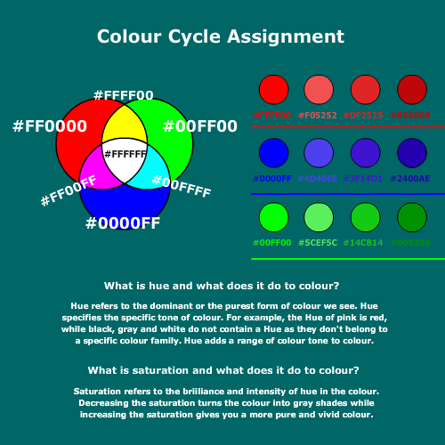
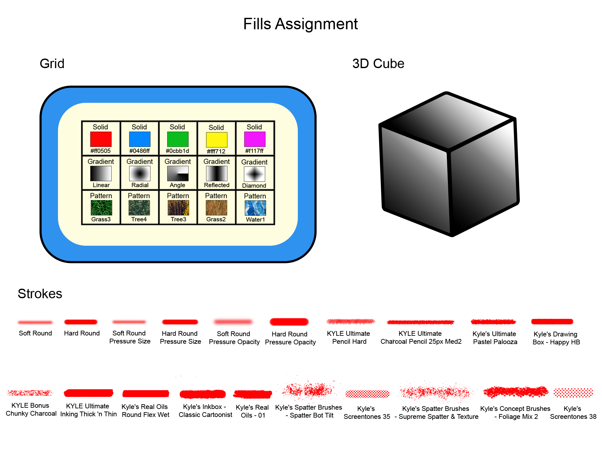
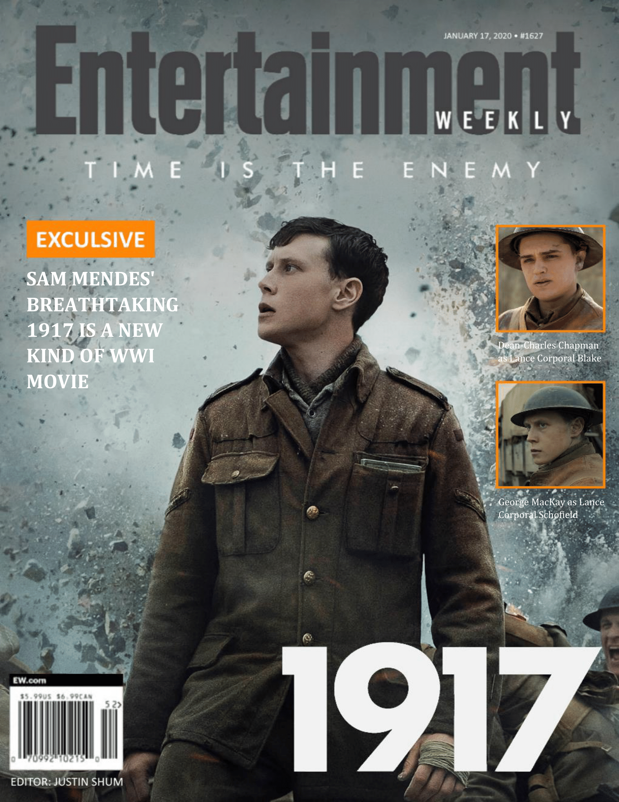

Graphic
 |
Colour CycleThis Colour Cycle image was created using Adobe Animate. The purpose of this image is to help us get a better understanding of some basic terms and issues of color and get familiar with referencing colours through hexadecimal numbers. This is a neat assignment and it certainly helps me to better understand colour. |
 |
Fills AssignmentThis Fills Assignment image was created using Photoshop. This assignment focuses on helping us to be more familiar with some of the different tools and techniques in the graphic program. Needless to say, this assignment has helped me to better familiarize myself with Photoshop. |
 |
Weekly MagazineWorking on the Weekly Magazine assignment was a refreshing experience. In this assignment I created two cover and two article pages of a magazine using MS Word and Photoshop. This assignment has helped me to better pick up the art of graphic designing. |